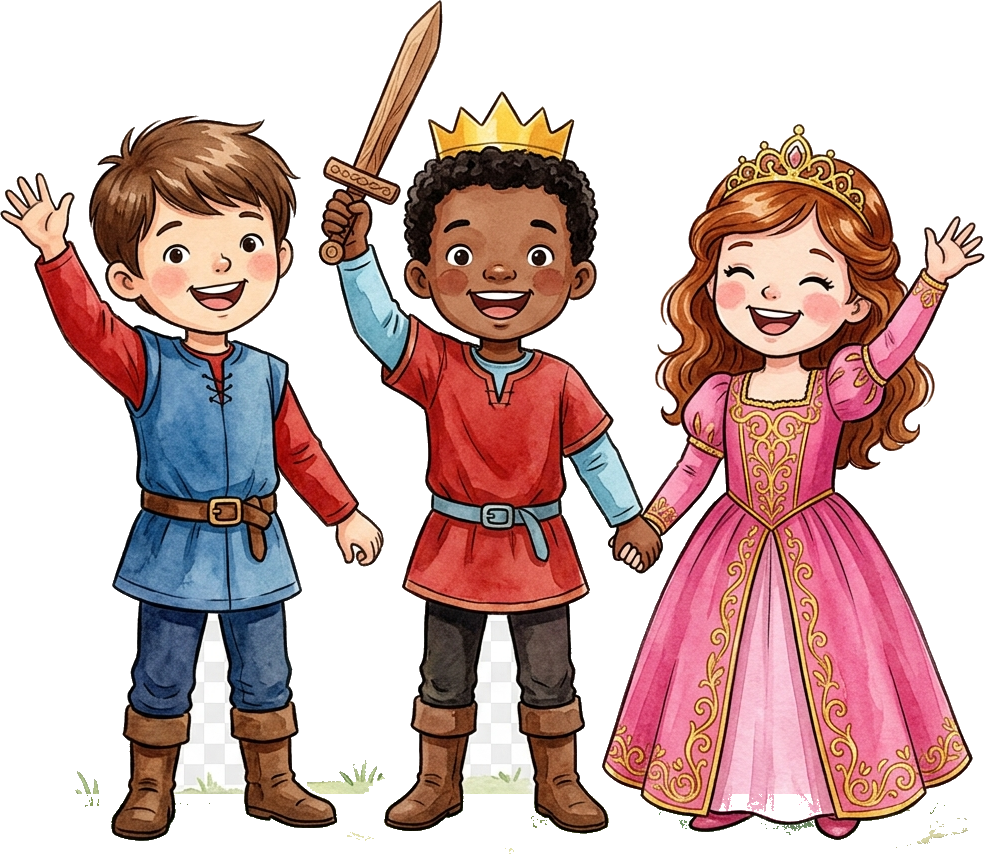
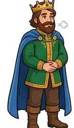
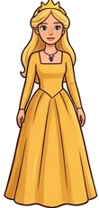

O Castelo que Nasce do Coração
Um Conto de Amor, Magia e Adoção
"Uma verdadeira família nasce do amor, do cuidado e do afeto... os filhos também nascem no coração. Esse é o poder da adoção!"

O Rei ⚔️
A Rainha 👑
CAPÍTULO 1 • O REINO CINZENTO
▶
O Castelo Sem Cores
O Rei e a Rainha iniciam a busca por amor e esperança.
CAPÍTULO 2 • 💚 EQUILÍBRIO
▶
A Floresta da Esperança
O encontro com o Mago Sábio e a semente dourada.
CAPÍTULO 3 • 💛 MATHEUS
▶
O Pincel Encantado
Príncipe Matheus pinta o reino e devolve as cores do amor!
CAPÍTULO 4 • 💙 CONFIANÇA
▶
O Encontro das Almas
O laço profundo de união e proteção entre os irmãos.
CAPÍTULO 5 • ❤️ PEDRO
▶
O Galope da Coragem
Pedro a cavalo galopa pelas montanhas com bravura!
CAPÍTULO 6 • 🌸 PROTEÇÃO
▶
O Laço da Proteção
A chegada da pequena princesa e o carinho dos irmãos.
CAPÍTULO 7 • 💖 MARIA ROSA
▶
O Baile Real de Maria Rosa
Dança encantada de pétalas e música no salão real.
CAPÍTULO 8 • 👑 A CELEBRAÇÃO
▶
A Grande Celebração do Amor
Todos os três filhos unidos pelo poder da adoção!